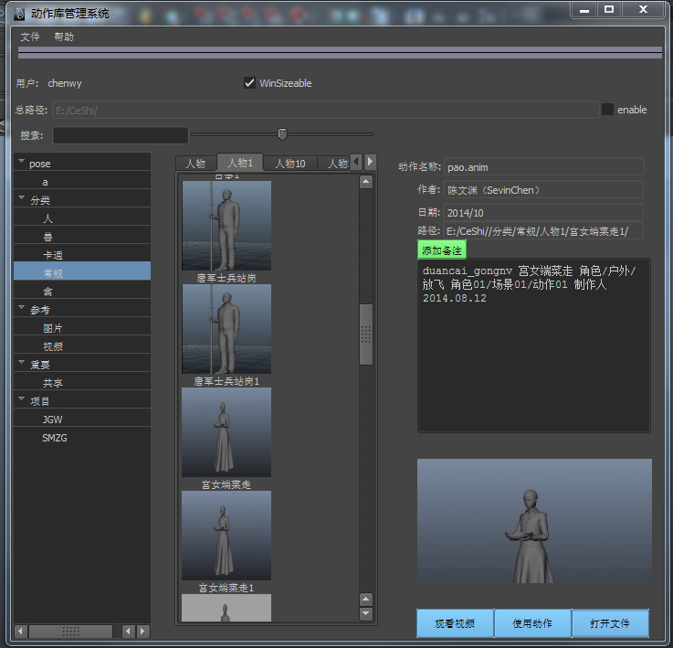
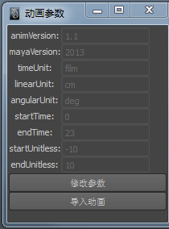
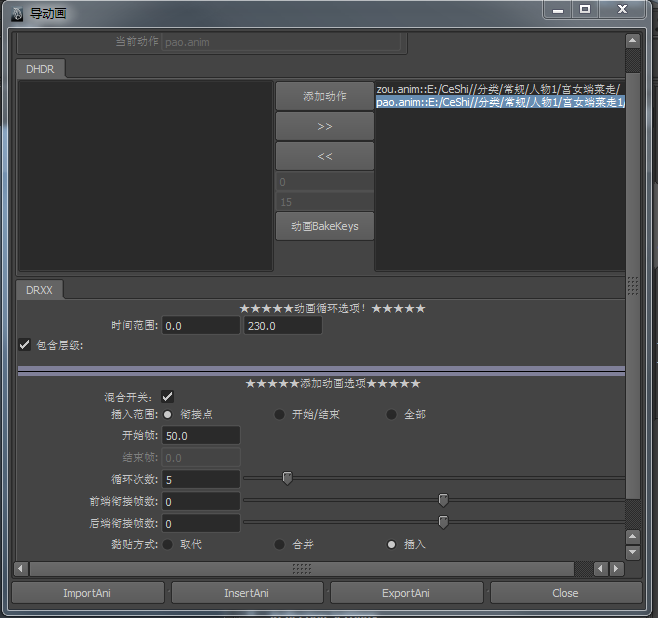

<!DOCTYPE HTML PUBLIC "-//W3C//DTD HTML 4.0 Transitional//EN">
<HTML><HEAD><TITLE>Topic 1</TITLE>
<META content="text/html; charset=utf-8" http-equiv=Content-Type>
<META name=GENERATOR content="MSHTML 8.00.7601.17514"></HEAD>
<BODY>
<DIV class=footer>
<P class=STYLE2><FONT color=#0000ff>动作库管理系统</FONT></P>
<UL>
  <LI class=STYLE1><FONT color=#0000ff>普通用户界面</FONT> 
  <LI class=STYLE1> 
  <LI class=STYLE1>
  <P class=STYLE3><FONT color=#ff0000><STRONG>主窗口</STRONG></FONT>：</P>
  <BLOCKQUOTE>
    <P><SPAN class=STYLE4><FONT color=#ff0000>左侧</FONT></SPAN>为动作类型列表:</P>
    <UL>
      <LI><STRONG>动作检索按钮</STRONG>：点击进入动作检索窗口</LI></UL>
    <P>选择动作类型，在动作名称列表内就会显示此类型所包含的动作名称</P>
    <P><SPAN class=STYLE4><FONT color=#ff0000>中间</FONT></SPAN>为动作名称列表</P>
    <P>选择动作名称，在动作信息区就会显示此动作的详细信息</P>
    <P><SPAN class=STYLE4><FONT color=#ff0000>右侧</FONT></SPAN>为动作信息显示区</P>
    <UL>
      <LI><STRONG>观看动作按纽</STRONG>：会弹出此动作的视频 
      <LI><STRONG>使用动作按纽</STRONG>：会弹出导入动画窗口 </LI></UL></BLOCKQUOTE>
  <P><SPAN class=STYLE3><STRONG><FONT 
  color=#ff0000>动作按指定帧数导入窗口：</FONT></STRONG></SPAN></P>
  <LI class=STYLE1>
  <P><SPAN class=STYLE3></SPAN></P>
  <LI class=STYLE1><SPAN class=STYLE3>
  <P><SPAN class=STYLE3><STRONG><FONT 
  color=#ff0000>导入动画窗口：</FONT></STRONG></SPAN></P>
  <UL>
    <LI><STRONG>动画信息</STRONG>：显示当前要导入的动作名称 
    <LI><STRONG>导入参数选项</STRONG>：勾选“图片帮助”，可以查看各种导入方式 
    <LI></LI></UL></SPAN>
  <LI class=STYLE1>
  <P><SPAN class=STYLE3></SPAN>&nbsp;</P></LI></UL>
<HR>

<P>&nbsp;Copyright ©2014 <SPAN class=STYLE5><FONT color=#0033ff>All Reserved. 
深圳华强　2014年11月 作者：陈文渊</FONT></SPAN></P></DIV></BODY></HTML>
